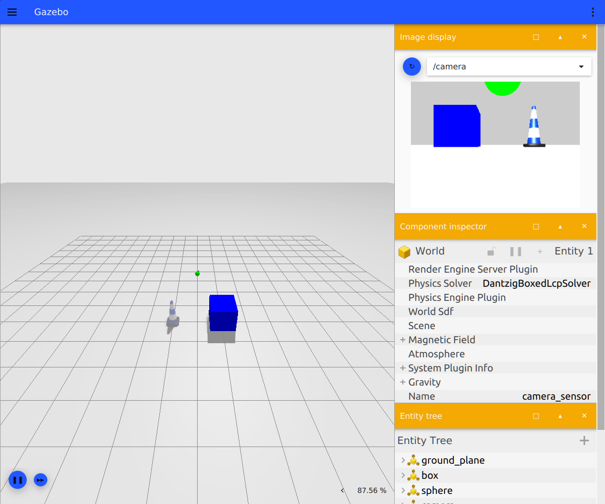
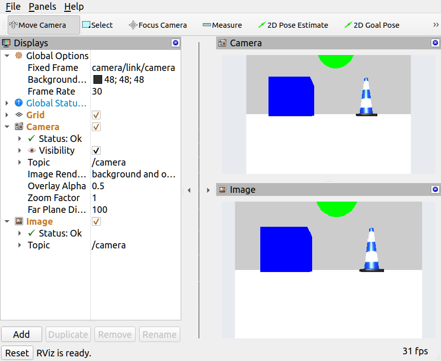

Gazebo 仿真相机与图像话题验证
本实验在 Ubuntu 22.04 + ROS 2 Humble + Gazebo Fortress 下，用官方示例包 ros_gz_sim_demos 启动一个带 RGB 相机的 Gazebo 场景，把相机图像桥接成标准 ROS 2 话题，并在命令行与 RViz2 中确认画面确实在实时刷新。
实验只用系统自带示例包，不需要自己写 URDF、SDF 或插件，适合作为图像类感知实验的起点：跑通「仿真相机 → 桥接 → ROS 2 话题 → 可视化」这条链路之后，再去接自己的检测、分类或测距节点。
1. 要解决的问题
很多图像感知实验在仿真里卡在第一步：Gazebo 里的相机到底有没有出图、出的图是哪个话题、长什么样，肉眼和命令行都不确定。本实验把这件事拆成三个可以单独验证的环节：
- Gazebo 侧：场景启动后相机传感器是否工作；
- 桥接侧：Gazebo Transport 的图像是否真的转成了
sensor_msgs/msg/Image； - ROS 2 侧：话题频率、分辨率、编码、相机内参是否符合预期，RViz2 里能否看到连续画面。
三个环节都通过，才说明后续的视觉节点拿到的是可信的仿真图像。
2. 系统组成与数据流
camera_sensor.sdf] -->|RGB 图像| B[Gazebo Transport] B --> C{ros_gz_bridge
parameter_bridge} C -->|sensor_msgs/Image| D[/camera/] C -->|sensor_msgs/CameraInfo| E[/camera_info/] D --> F[RViz2 Camera 面板] D --> G[RViz2 Image 面板] D --> H[命令行 ros2 topic hz] style C fill:#fff3e0,color:#e65100 style D fill:#bbdefb,color:#0d47a1 style E fill:#bbdefb,color:#0d47a1
ros_gz_sim_demos 的 camera.launch.py 会同时启动三个部件：Gazebo（含 GUI）、ros_gz_bridge 的 parameter_bridge、以及加载好相机面板的 RViz2。桥接规则写死在 launch 里：
/camera sensor_msgs/msg/Image @ gz.msgs.Image
/camera_info sensor_msgs/msg/CameraInfo @ gz.msgs.CameraInfo
两条规则都用 @ 表示双向桥接（GZ→ROS 和 ROS→GZ 同时建立），实测日志里也能看到两个方向的 Bridge 都被创建。相机图像实际只有 Gazebo 会发布，所以 GZ→ROS 方向有持续数据流，ROS→GZ 方向闲置。
3. 环境与安装
| 项目 | 本实验验证版本 |
|---|---|
| 操作系统 | Ubuntu 22.04 |
| ROS 2 | Humble |
| Gazebo | Gazebo Sim 6.18.0（Fortress） |
| 示例包 | ros-humble-ros-gz-sim-demos |
先加载 ROS 2 环境并确认发行版：
source /opt/ros/humble/setup.bash
echo "$ROS_DISTRO" # 应输出 humble
示例包会自动拉取 Gazebo Fortress、ros_gz 桥接和 RViz2，不需要逐个安装：
sudo apt update
sudo apt install -y ros-humble-ros-gz-sim-demos
安装后可以先确认包存在：
ros2 pkg prefix ros_gz_sim_demos # 应输出 /opt/ros/humble
ign gazebo --version # 应输出 Gazebo Sim, version 6.x
4. 启动仿真
ros2 launch ros_gz_sim_demos camera.launch.py
正常启动后会出现两个窗口：Gazebo（左侧 3D 场景，右侧 Image display 面板订阅 /camera）和 RViz2。终端里能看到桥接建立日志（每个话题双向各一条）：
[ros_gz_bridge]: Creating GZ->ROS Bridge: [/camera (gz.msgs.Image) -> /camera (sensor_msgs/msg/Image)]
[ros_gz_bridge]: Creating ROS->GZ Bridge: [/camera (sensor_msgs/msg/Image) -> /camera (gz.msgs.Image)]
[ros_gz_bridge]: Creating GZ->ROS Bridge: [/camera_info (gz.msgs.CameraInfo) -> /camera_info (sensor_msgs/msg/CameraInfo)]
[ros_gz_bridge]: Creating ROS->GZ Bridge: [/camera_info (sensor_msgs/msg/CameraInfo) -> /camera_info (gz.msgs.CameraInfo)]

Gazebo 窗口右侧的 Image display 下拉框里选择 /camera，如果能看到蓝色方块、绿色球体和交通锥，说明相机传感器本身已经在出图。这一步最直观，但要确认数据真的进了 ROS 2，还需要下一步的话题检查。
5. 检查话题与图像规格
新开一个终端，同样先 source /opt/ros/humble/setup.bash。
查看话题与消息类型
ros2 topic list -t
实测输出中与相机相关的部分：
/camera [sensor_msgs/msg/Image]
/camera_info [sensor_msgs/msg/CameraInfo]
查看发布者数量
ros2 topic info /camera
实测输出：
Type: sensor_msgs/msg/Image
Publisher count: 1
只有 1 个发布者，说明图像来自桥接，而不是别的节点在误发。
查看频率
ros2 topic hz /camera
实测输出（连续多个窗口都稳定在 27 Hz 左右）：
average rate: 27.580
min: 0.027s max: 0.042s std dev: 0.00334s window: 113
查看相机内参与图像规格
ros2 topic echo /camera_info --once
实测关键字段：
frame_id: camera/link/camera
height: 240
width: 320
distortion_model: plumb_bob
k:
- 277.1913528442383
- 0.0
- 160.0
- 0.0
- 277.1913528442383
- 120.0
- 0.0
- 0.0
- 1.0
图像消息本身的规格可以用下面的命令打印，或用 RViz2 的 Image 面板直接确认：
ros2 topic echo /camera --once --field encoding
ros2 topic echo /camera --once --field width
ros2 topic echo /camera --once --field height
实测为 rgb8、320、240，step 为 960（320 × 3），frame_id 为 camera/link/camera。内参矩阵中的焦距 277.19 与主点 (160, 120) 正好对应 320 × 240 的中心，畸变系数全为 0。
6. 在 RViz2 中查看实时画面
camera.launch.py 默认会带 RViz2，并加载 camera.rviz 配置。窗口中已经配好两个显示项：
Camera：把相机图像按固定帧camera/link/camera投影到 3D 视图；Image：把图像原样贴到面板上。
两个面板的 Status 都是 Ok，Topic 都是 /camera，右下角帧率显示约 31 fps，说明画面在持续刷新而不是卡在某一帧。

如果要自己重新添加显示项，在左下角 Add 里分别选 rviz_default_plugins/Camera 和 rviz_default_plugins/Image，再把 Topic 设为 /camera 即可。Global Options 里的 Fixed Frame 需要设成 camera/link/camera，否则会因为找不到坐标系而显示异常。
7. 实测结果
在同一台机器上多次采样，结果稳定：
| 指标 | 实测值 |
|---|---|
| 图像话题 | /camera（sensor_msgs/msg/Image） |
| 标定话题 | /camera_info（sensor_msgs/msg/CameraInfo） |
| 发布者数量 | 1 |
| 分辨率 | 320 × 240 |
| 像素编码 | rgb8，step = 960 |
| 坐标帧 | camera/link/camera |
| 平均频率 | 27.5 Hz（27.52 / 27.58 两个窗口） |
| 帧间隔 | 最小 0.027 s，最大 0.042 s，标准差约 0.0033 s |
| 内参 | f = 277.19，cx = 160，cy = 120，畸变系数全 0 |
| RViz2 显示 | Camera 与 Image 面板 Status: Ok，约 31 fps |
频率不到 30 Hz 属于正常现象：Gazebo 的相机按仿真步长采样，实际发布频率受渲染速度与实时因子影响，不同机器上会有几个 Hz 的差异。
8. 常见问题
Wayland 会话下的 Qt 提示
Warning: Ignoring XDG_SESSION_TYPE=wayland on Gnome.
这是 Gazebo 与 RViz2 在 Wayland 桌面下的提示，不影响运行。如需固定 Qt 平台后端，可以显式指定走 XWayland：
QT_QPA_PLATFORM=xcb ros2 launch ros_gz_sim_demos camera.launch.py
Gazebo 窗口起不来或刚启动就退出
多半是没有可用的图形会话或 GPU 设备。如果终端里能看到下面这类告警：
libEGL warning: egl: failed to create dri2 screen
libEGL warning: failed to open /dev/dri/renderD128
说明当前环境（远程 SSH、纯容器、无 GPU 的虚拟机）无法创建渲染上下文。本实验需要 Gazebo GUI 与 RViz2 来确认画面，请在有桌面且有可用 GPU 或软件渲染的环境下运行。
ros2 topic list 里没有 /camera
按顺序排查：
- 确认 Gazebo 窗口里的场景已经加载，并且
Image display选到了/camera； - 确认桥接节点还在：
ros2 node list | grep ros_gz_bridge； - 确认使用的是同一个
ROS_DOMAIN_ID，两个终端都要先source /opt/ros/humble/setup.bash。
有 /camera 但画面不刷新
ros2 topic hz /camera 如果输出 no new messages，通常是 Gazebo 处于暂停状态（GUI 左下角的暂停按钮被按下），点一下继续即可。